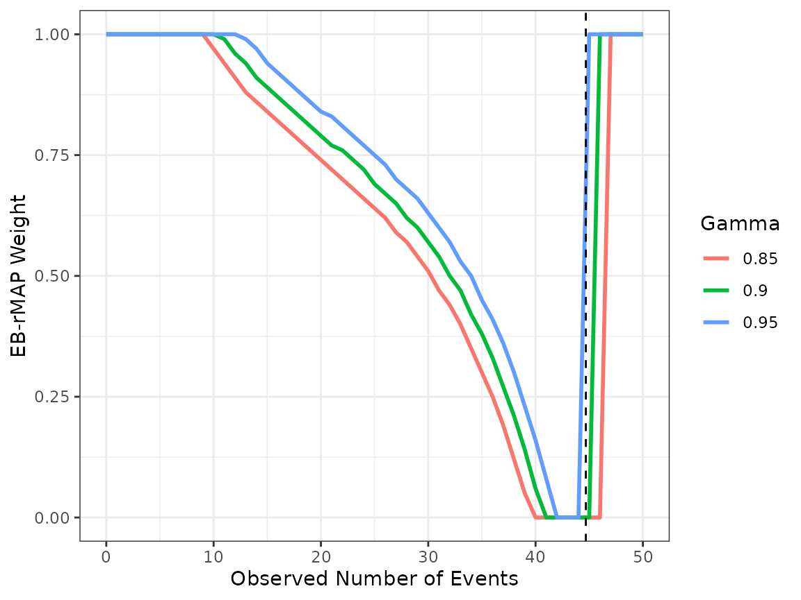

EB-rMAP Prior with a Time-to-Event Endpoint
Hongtao Zhang
12/28/2022
TTE.RmdIn this vignette, we showcase how the EB-rMAP method can be implemented when a time-to-event (TTE) endpoint is of interest. It is essentially replicating the data analysis carried out in section 4 of Zhang et al. [1].
Data
The data in 10 oncology studies come from Roychoudhury and Neueuschwander (2020) [2]. In each study, the four-year follow-up period was partitioned into 12 intervals, and the number of events and total exposure (follow-up) time in years were recorded. For illustration purposes, the first 9 trials are regarded as historical trials, while the 10th trial is considered the current trial. The full data is displayed in the Appendix. We aggregate the data between year 0 and 1.5 to implement the EB-rMAP method for the log hazard rates.
library(RBesT)
#> This is RBesT version 1.6.4
library(tidyverse)
#> ── Attaching packages
#> ───────────────────────────────────────
#> tidyverse 1.3.2 ──
#> ✔ ggplot2 3.4.0 ✔ purrr 1.0.0
#> ✔ tibble 3.1.8 ✔ dplyr 1.0.10
#> ✔ tidyr 1.2.1 ✔ stringr 1.5.0
#> ✔ readr 2.1.3 ✔ forcats 0.5.2
#> ── Conflicts ────────────────────────────────────────── tidyverse_conflicts() ──
#> ✖ dplyr::filter() masks stats::filter()
#> ✖ dplyr::lag() masks stats::lag()
library(knitr)
library(kableExtra)
#>
#> Attaching package: 'kableExtra'
#>
#> The following object is masked from 'package:dplyr':
#>
#> group_rows
library(EBrmap)
set.seed(712)
Time <- c("0.00-0.25", "0.25-0.50", "0.50-0.75", "0.75-1.00",
"1.00-1.25", "1.25-1.50", "1.50-1.75", "1.75-2.08",
"2.08-2.50", "2.50-2.92", "2.92-3.33", "3.33-4.00")
FIOCCO.n.events <- c(1, 3, 3, 4, 3, 0, 0, 2, 0, 6, 0, 0, 9, 1, 0, 10, 6, 6, 5, 9,
9, 3, 0, 0, 1, 3, 5, 7, 9, 4, 5, 10, 0, 0, 3, 7, 1, 2, 2, 4,
3, 1, 3, 0, 0, 0, 0, 0, 5, 3, 6, 2, 3, 3, 0, 2, 1, 1, 1, 0,
0, 6, 3, 12, 8, 2, 3, 2, 11, 1, 0, 10, 2, 2, 5, 3, 3, 3, 2, 3,
3, 0, 0, 0, 0, 1, 3, 4, 1, 1, 4, 1, 6, 0, 0, 0, 2, 0, 3, 1,
4, 0, 1, 1, 0, 0, 0, 0, 1, 5, 17, 0, 2, 7, 8, 4, 0, 6, 2, 0)
FIOCCO.exp.time <- c(9.4, 8.8, 7.9, 7.0, 6.1, 5.8, 5.8, 7.3, 8.8, 7.6, 6.2, 10.0, 21.1,
19.9, 19.8, 18.5, 16.5, 15.0, 13.6, 15.7, 16.2, 13.6, 12.5, 20.1, 21.9, 21.4,
20.4, 18.9, 16.9, 15.2, 14.1, 16.2, 18.5, 18.3, 17.0, 24.5, 5.6, 5.2, 4.8,
4.0, 3.1, 2.6, 2.1, 2.3, 2.9, 2.9, 2.9, 4.7, 6.4, 5.4, 4.2, 3.2,
2.6, 1.9, 1.5, 1.7, 1.5, 1.0, 0.6, 0.7, 17.8, 17.0, 15.9, 14.0, 11.5,
10.2, 9.6, 11.9, 12.4, 9.9, 9.4, 12.1, 8.0, 7.5, 6.6, 5.6, 4.9, 4.1,
3.5, 3.8, 3.6, 2.9, 2.9, 4.7, 9.2, 9.1, 8.6, 7.8, 7.1, 6.9, 6.2,
7.4, 8.0, 6.7, 6.6, 10.7, 5.2, 5.0, 4.6, 4.1, 3.5, 3.0, 2.9, 3.5,
4.2, 4.2, 4.1, 6.7, 23.4, 22.6, 19.9, 17.8, 17.5, 16.4, 14.5, 17.2, 21.0,
19.7, 17.4, 27.5)
rmat <-
as_tibble(matrix(FIOCCO.n.events, nrow = 12, ncol = 10, byrow = F),
.name_repair = "minimal")
colnames(rmat) <- c(paste("Hist",1:9, sep=""), "Curr")
rdt <- tibble(Interval=Time, rmat)
Emat <-
as_tibble(matrix(FIOCCO.exp.time, nrow = 12, ncol = 10, byrow = F),
.name_repair = "minimal")
colnames(Emat) <- c(paste("Hist",1:9, sep=""), "Curr")
Edt <- tibble(Interval=Time, Emat)
rvec <- rdt[1:6,] %>% select(-c("Interval")) %>% colSums()
Evec <- Edt[1:6,] %>% select(-c("Interval")) %>% colSums()
adt <- tibble(Trial=c(paste("Hist",1:9, sep=""), "Curr"), NEvent=rvec, TotExp=Evec)
adt %>% kbl(caption="Aggregated Data Through Year 1.5") %>%
kable_classic(full_width = F, html_font = "Cambria", latex_options = "HOLD_position")| Trial | NEvent | TotExp |
|---|---|---|
| Hist1 | 14 | 45.0 |
| Hist2 | 32 | 110.8 |
| Hist3 | 29 | 114.7 |
| Hist4 | 13 | 25.3 |
| Hist5 | 22 | 23.7 |
| Hist6 | 31 | 86.4 |
| Hist7 | 18 | 36.7 |
| Hist8 | 10 | 48.7 |
| Hist9 | 10 | 25.4 |
| Curr | 32 | 117.6 |
The random effect meta-analysis yields a point estimate of 0.38, and the 95% CI is (0.282, 0.510).
meta::metarate(NEvent, TotExp, Trial, data=adt[1:9,])MAP Prior and EB-rMAP Prior
The MAP prior is derived using the RBesT::gMAP
command via a Poisson regression. It is critical to specify the log
total exposure as the offset of the model. We use the same
specifications in section 4 of Zhang et al. [1]: a \(N(0,10^2)\) hyper-prior for the overall
mean and a \(HN(0.5)\) hyper-prior for
the exchangeability parameter \(\tau\).
The MAP prior is then approximated by a mixture of two Gamma
distributions (mean and number of observations, or mn
parameterization). The vague prior to construct the robust MAP prior is
\(Gamma(0.38,1)\), which has the same
mean with the meta-analysis but the effective sample size is only 1.
histdt <- adt[1:9,]
map_mcmc <- gMAP(NEvent ~ 1 + offset(log(TotExp)) | Trial, data = histdt, family = poisson,
tau.dist = "HalfNormal", tau.prior = cbind(0, 0.5),
beta.prior=cbind(0, 10))
(map_hat <- automixfit(map_mcmc))
#> EM for Gamma Mixture Model
#> Log-Likelihood = 1447.221
#>
#> Univariate Gamma mixture
#> Mixture Components:
#> comp1 comp2
#> w 0.8244201 0.1755799
#> a 7.9655739 2.3129948
#> b 21.3824889 3.7639130
(vague_prior <- mixgamma(c(1, 0.38, 1), param = "mn"))
#> Univariate Gamma mixture
#> Mixture Components:
#> comp1
#> w 1.00
#> a 0.38
#> b 1.00Suppose that we are designing a new single arm trial, augmented by the historical data via the robust MAP prior. The projected total exposure in the current trial is 117.6 years. We examine the behavior of EB-rMAP weight correspoding to \(\gamma =\) 0.85, 0.9 and 0.95 respectively.
y_range <- c(0, 50)
n <- 117.6
obj1 <- EB_rMAP(map_hat, vague_prior, 0.85, n, y_range)
obj2 <- EB_rMAP(map_hat, vague_prior, 0.9, n, y_range)
obj3 <- EB_rMAP(map_hat, vague_prior, 0.95, n, y_range)
plotdt1 <- obj1$wdt %>% mutate(Gamma=obj1$ppp_cut)
plotdt2 <- obj2$wdt %>% mutate(Gamma=obj2$ppp_cut)
plotdt3 <- obj3$wdt %>% mutate(Gamma=obj3$ppp_cut)
plotdt <- rbind(plotdt1, plotdt2, plotdt3)
plotdt %>%
ggplot(aes(x=y, y = w_eb, color=factor(Gamma))) + geom_line(size=1) +
xlab("Observed Number of Events") + ylab("EB-rMAP Weight") + theme_bw() +
geom_vline(xintercept=0.38*n, linetype="dashed") +
scale_color_discrete(name="Gamma")
#> Warning: Using `size` aesthetic for lines was deprecated in ggplot2 3.4.0.
#> ℹ Please use `linewidth` instead.
We can immediately see that the choice of \(\gamma=0.95\) might be too stringent, as the weight is close to 1 even when the observed hazard rate in the current trial is close to historical mean hazard rate. After the initial screen, both $=$0.9 and 0.85 appear to be reasonable choices. We recommend further evaluation via simulation studies in real applications. For illustration purposes, we proceed with \(\gamma=0.9\).
Suppose that we observe 32 events in the new trial, the corresponding \(w_{EB}\) is 0.5.
wEB(obj2, 32)
#> [1] 0.5We can then construct the rMAP prior with the empirical Bayes weight, and derive the posterior distribution. Further Bayesian estimation and inference will be based on the posterior distribution, which is also a weighted mixture of Gamma distributions.
rmap <- robustify(map_hat, weight=0.5, mean=0.38, n=1)
(postmix_rmap <- postmix(rmap, n = adt$TotExp[10] , m = adt$NEvent[10]/adt$TotExp[10]))
#> Univariate Gamma mixture
#> Mixture Components:
#> comp1 comp2 robust
#> w 0.70689137 0.06482092 0.22828771
#> a 39.96557392 34.31299476 32.38000000
#> b 138.98248889 121.36391299 118.60000000Appendix: Full Data
rdt %>% kbl(caption="Number of Events") %>%
kable_classic(full_width = F, html_font = "Cambria", latex_options = "HOLD_position")| Interval | Hist1 | Hist2 | Hist3 | Hist4 | Hist5 | Hist6 | Hist7 | Hist8 | Hist9 | Curr |
|---|---|---|---|---|---|---|---|---|---|---|
| 0.00-0.25 | 1 | 9 | 1 | 1 | 5 | 0 | 2 | 0 | 2 | 1 |
| 0.25-0.50 | 3 | 1 | 3 | 2 | 3 | 6 | 2 | 1 | 0 | 5 |
| 0.50-0.75 | 3 | 0 | 5 | 2 | 6 | 3 | 5 | 3 | 3 | 17 |
| 0.75-1.00 | 4 | 10 | 7 | 4 | 2 | 12 | 3 | 4 | 1 | 0 |
| 1.00-1.25 | 3 | 6 | 9 | 3 | 3 | 8 | 3 | 1 | 4 | 2 |
| 1.25-1.50 | 0 | 6 | 4 | 1 | 3 | 2 | 3 | 1 | 0 | 7 |
| 1.50-1.75 | 0 | 5 | 5 | 3 | 0 | 3 | 2 | 4 | 1 | 8 |
| 1.75-2.08 | 2 | 9 | 10 | 0 | 2 | 2 | 3 | 1 | 1 | 4 |
| 2.08-2.50 | 0 | 9 | 0 | 0 | 1 | 11 | 3 | 6 | 0 | 0 |
| 2.50-2.92 | 6 | 3 | 0 | 0 | 1 | 1 | 0 | 0 | 0 | 6 |
| 2.92-3.33 | 0 | 0 | 3 | 0 | 1 | 0 | 0 | 0 | 0 | 2 |
| 3.33-4.00 | 0 | 0 | 7 | 0 | 0 | 10 | 0 | 0 | 0 | 0 |
Edt %>% kbl(caption="Total Exposure (in Years)") %>%
kable_classic(full_width = F, html_font = "Cambria", latex_options = "HOLD_position")| Interval | Hist1 | Hist2 | Hist3 | Hist4 | Hist5 | Hist6 | Hist7 | Hist8 | Hist9 | Curr |
|---|---|---|---|---|---|---|---|---|---|---|
| 0.00-0.25 | 9.4 | 21.1 | 21.9 | 5.6 | 6.4 | 17.8 | 8.0 | 9.2 | 5.2 | 23.4 |
| 0.25-0.50 | 8.8 | 19.9 | 21.4 | 5.2 | 5.4 | 17.0 | 7.5 | 9.1 | 5.0 | 22.6 |
| 0.50-0.75 | 7.9 | 19.8 | 20.4 | 4.8 | 4.2 | 15.9 | 6.6 | 8.6 | 4.6 | 19.9 |
| 0.75-1.00 | 7.0 | 18.5 | 18.9 | 4.0 | 3.2 | 14.0 | 5.6 | 7.8 | 4.1 | 17.8 |
| 1.00-1.25 | 6.1 | 16.5 | 16.9 | 3.1 | 2.6 | 11.5 | 4.9 | 7.1 | 3.5 | 17.5 |
| 1.25-1.50 | 5.8 | 15.0 | 15.2 | 2.6 | 1.9 | 10.2 | 4.1 | 6.9 | 3.0 | 16.4 |
| 1.50-1.75 | 5.8 | 13.6 | 14.1 | 2.1 | 1.5 | 9.6 | 3.5 | 6.2 | 2.9 | 14.5 |
| 1.75-2.08 | 7.3 | 15.7 | 16.2 | 2.3 | 1.7 | 11.9 | 3.8 | 7.4 | 3.5 | 17.2 |
| 2.08-2.50 | 8.8 | 16.2 | 18.5 | 2.9 | 1.5 | 12.4 | 3.6 | 8.0 | 4.2 | 21.0 |
| 2.50-2.92 | 7.6 | 13.6 | 18.3 | 2.9 | 1.0 | 9.9 | 2.9 | 6.7 | 4.2 | 19.7 |
| 2.92-3.33 | 6.2 | 12.5 | 17.0 | 2.9 | 0.6 | 9.4 | 2.9 | 6.6 | 4.1 | 17.4 |
| 3.33-4.00 | 10.0 | 20.1 | 24.5 | 4.7 | 0.7 | 12.1 | 4.7 | 10.7 | 6.7 | 27.5 |
References
[1] Zhang, H., Shen, Y., Chiang, AY., Li, J. (2022+) Adaptively Leveraging External Data with Robust Meta-Analytical-Predictive Prior Using Empirical Bayes.
[2] Roychoudhury, S., Neuenschwander, B. (2020). Bayesian leveraging of historical control data for a clinical trial with time-to-event en Statistics in Medicine, 39(7), 984-995.